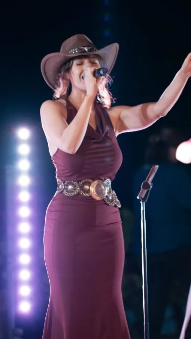
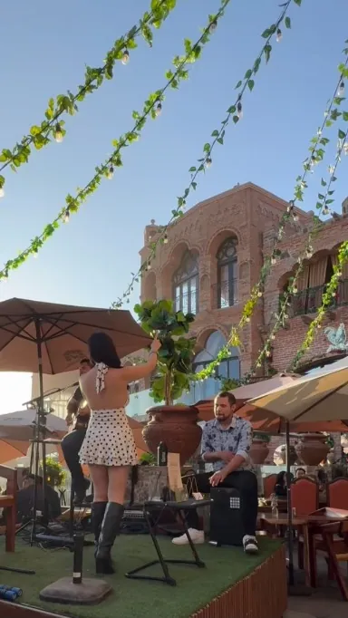
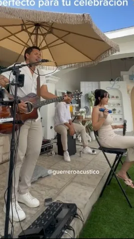

Galería
Lo que hace
- 01
Bodas
El soundtrack de su celebración, de la ceremonia a la cena.
- 02
Eventos privados
Cócteles, cenas y reuniones con música tranquila o para bailar.
- 03
Restaurantes
Live sessions semanales en el Valle y Rosarito.
- 8,632personas siguen su trabajo en Instagram
Sobre el grupo
Guerrero Acústico hace música acústica en vivo desde Valle de Guadalupe, Baja California.
Voz, guitarra y percusión para eventos privados, bodas, cócteles y cenas.
Cada semana tocan en lugares como La Botella Bistró, Salvia Blanca y Los Portales de Rosarito, frente al mar o entre los viñedos.
Hay canciones que no solo se escuchan, se sienten en el corazón.
¿Tu evento?
Escríbele y arma la fecha.
Pedir fecha